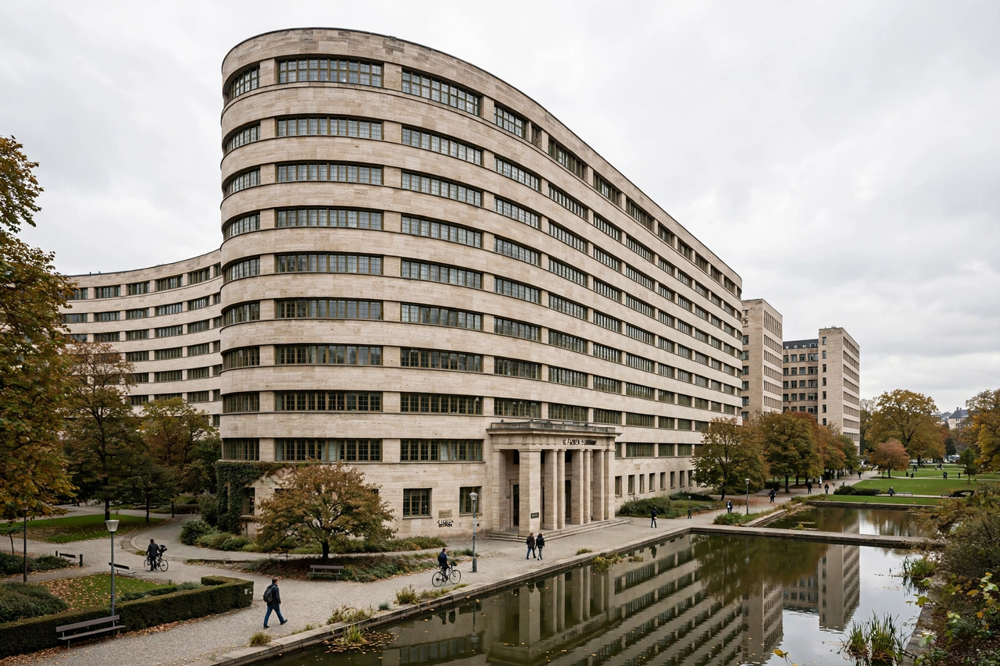

| IG Farben | |
|---|---|
 | |
| Full name | Interessen-Gemeinschaft Farbenindustrie AG |
| Founded | 2 December 1925, Frankfurt am Main |
| Dissolved | Seized 1945; liquidation from 1952 |
| Industry | Chemicals; pharmaceuticals |
| Successors | BASF, Bayer, Hoechst, Agfa and others |
IG Farben (from German Interessen-Gemeinschaft Farbenindustrie AG, "Dyestuffs Industry Interest Group Inc.") was a German chemical and pharmaceutical conglomerate formed in 1925 from a merger of six chemical companies — BASF, Bayer, Hoechst, Agfa, Chemische Fabrik Griesheim-Elektron, and Chemische Fabrik vorm. Weiler Ter Meer. It grew out of dye works at sites including Ludwigshafen and became the largest company in Germany and one of the largest in the world.
IG Farben was deeply implicated in the Nazi war economy and the Holocaust. It produced synthetic fuel and rubber vital to the German war effort, supplied Zyklon B (through its part-owned firm Degesch) used in extermination camps, and built the Buna-Werke plant at Monowitz, part of the Auschwitz complex, using concentration camp labour; tens of thousands of prisoners died there. The company plundered chemical industries across occupied Europe.
After the war, the Allies seized the company and put 23 of its executives on trial at Nuremberg in the IG Farben Trial (1947–48); thirteen were convicted. The conglomerate was broken up into its constituent companies, principally BASF, Bayer and Hoechst, which became major corporations in their own right. The rump IG Farben remained in liquidation for decades; compensation funds for former forced labourers were eventually established, notably through the German Foundation "Remembrance, Responsibility and Future" (2000).
Its Frankfurt headquarters, the IG Farben Building designed by Hans Poelzig (completed 1931), later served as a US Army headquarters and is now part of Goethe University Frankfurt.